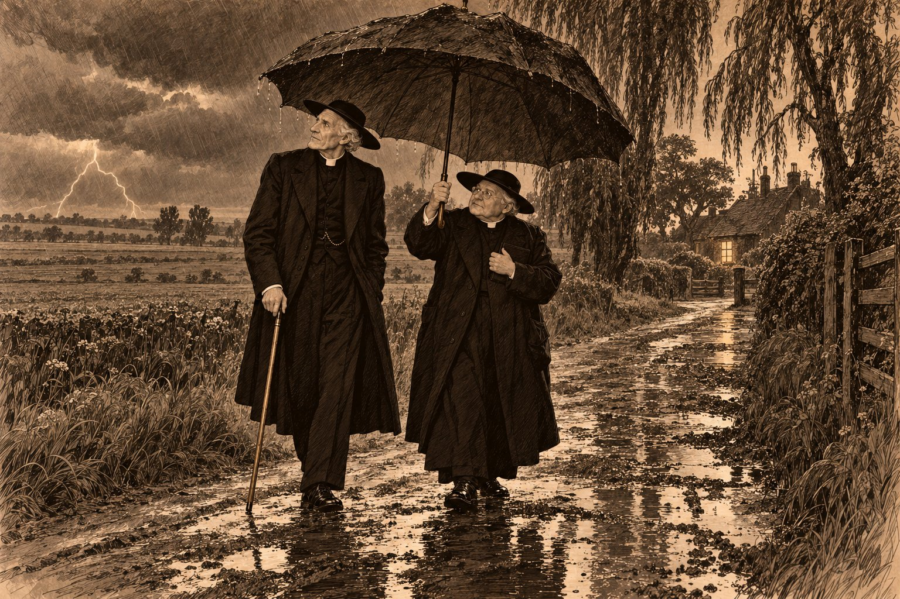

Последнее помазание

Indulgeat tibi Dominus quidquid per visum deliquisti.
Да простит тебе Господь всё, что ты согрешил зрением. — Римский ритуал, чин последнего помазания
Письмо пришло в начале июня, и викарий узнал почерк раньше, чем прочёл обратный адрес, потому что так пишут только люди, которые всю жизнь торопятся к умирающим: буквы бежали вперёд, падали друг на друга и всё-таки успевали сложиться в слова.
«Дорогой мистер Морс, — писал отец Браун. — Меня отпустили на покой, как отпускают старую лошадь на луг, и луг этот оказался в Эссексе, в городке Уитем, при нашей церкви на главной улице. Здешний настоятель терпит меня с христианским смирением и даже иногда позволяет служить. Я отсюда меньше чем в двадцати милях от Кобхола, где мы с вами познакомились у колыбели, и всё чаще думаю, что круг замыкается. Приезжайте, если подагра позволит. Мне хотелось бы выпить с вами кружку, пока мы оба ещё различаем, что в ней налито. Кланяйтесь миссис Морс. Я помню, что обещал приехать, когда будет нужно; теперь, кажется, нужно мне».
Агнес прочла письмо дважды, сложила его и сказала, что поедут все.
— Подагра... — начал викарий.
— Подагра поедет с тобой, — сказала Агнес. — Она тебя одного никуда не отпускает, и я тоже.
Везти их взялся Сирил.
Ему шёл двадцать седьмой год. От мистера Плейделла он ушёл прошлой осенью — так он сказал отцу, и отец услышал в этом «ушёл» ту ноту, которую слышал всякий раз, когда сын говорил ему неправду, но ни о чём не спросил. Теперь Сирил работал механиком в гараже на Скотгейт в Стамфорде, ходил в комбинезоне, который Агнес отказывалась стирать вместе с бельём, и пахло от него бензином так же постоянно, как от отца пахло старыми книгами. Хозяин гаража дал ему на неделю старый «Моррис», выкрашенный в цвет, который Сирил называл бутылочным, а Агнес — «цветом больничной стены». Сирил оглядел машину, как боцман оглядывает судно перед выходом, полчаса лежал под ней на спине, вылез с чёрными руками и сказал, что до Эссекса она дойдёт, а дальше никто и не просит.
В субботу, тринадцатого июня, в семь утра, они выехали из Сент-Гатлака. Ферокса оставили у соседей; он сидел у калитки с видом человека, которого обошли наследством. Пами не вышел вовсе. Он лежал на старом сундуке в углу кабинета, как лежал теперь почти всегда, и только приоткрыл голубые глаза, когда викарий наклонился к нему попрощаться, — как будто знал, что хозяин вернётся, и не видел причины вставать ради такой мелочи, как неделя.
Дорога шла на юг через Питерборо и Кембридж, потом через низкие зелёные холмы, которые после Фенов казались викарию горами. Сирил вёл машину хорошо — быстро там, где можно, и медленно там, где он один из всех видел, что надо медленно. Он говорил про Дерби, которое в конце мая выиграл Махмуд, лошадь Ага-хана, — «третий раз за семь лет, папа, и второй год подряд, а я опять ничего не взял, потому что не на что». Он засмеялся, и мать засмеялась, а отец нет.
Викарий смотрел в окно. Он думал о том, что сын говорит об Ага-хане так, как другие люди говорят о дальнем родственнике, от которого ждут наследства, и о том, что в Стамфорде уже рассказывают, будто Сирил Морс однажды возил Ага-хана. Он сам слышал это в «Джордже» от человека, которого не знал. Викарий не поправил. Ложь, которую рассказывают другие, не его забота; его забота — та, которую рассказывают ему.
Уитем оказался длинной улицей, которая сначала была дорогой из Лондона в Колчестер, а потом решила, что ей нравится жить, и обзавелась домами. Дома стояли тесно, плечом к плечу, как прихожане на Пасху: кирпичные, георгианские, с белыми рамами и чёрными дверями, а за ними, если заглянуть в подворотню, оказывались совсем другие, гораздо старше, с почерневшими балками и низкими потолками. Улица называлась Ньюленд-стрит — «Новая земля», хотя ничего нового в ней не было лет семьсот.
Их ждали в «Распростёртом орле». Это был старый постоялый двор с аркой для повозок и с голландским щипцом, на котором сидел деревянный орёл, раскинув крылья так широко, будто собирался обнять всю улицу и передумал. Под аркой Сирил поставил машину, а орёл сверху смотрел на «Моррис» с тем презрением, с каким существа, повидавшие почтовые кареты, смотрят на всё, что ездит без лошади.
Католическая церковь стояла на той же улице, в нескольких минутах ходьбы. Она была небольшая и прятала своё благочестие так же, как прятали старину соседние дома: с улицы — скромный фасад, за ним — тишина. Рядом стоял дом священника. Дверь открыла экономка настоятеля, сказала, что сам настоятель в отъезде, а отец Браун наверху, и что лестница узкая, пусть господа идут по одному.
Лестница действительно была узкая и крутая, как трап на корабле, и Сирил одобрил её с профессиональной точки зрения. Он взбежал первым. Викарий шёл за ним, держась за перила и оберегая правую ногу. Агнес шла последней.
На площадке перед верхним маршем она остановилась.
Викарий услышал, что шаги за спиной стихли, и обернулся. Агнес стояла, положив руку на перила, и смотрела на него снизу с тем выражением, с каким смотрела всегда, когда он делал что-нибудь не так: ласково и нетерпеливо.
— Иди, — сказала она. — Я посмотрю на картинку.
На стене площадки висела гравюра — какой-то святой с ключами, очень плохо нарисованный и очень терпеливый. Викарий пошёл наверх. Наверху, в открытых дверях маленькой комнаты, стоял отец Браун.
Он стал совсем старым. Круглое лицо, которое викарий помнил гладким, как яблоко в октябре, теперь было похоже на то же яблоко в марте: всё в мелких морщинах, но такое же круглое. Он был ещё меньше ростом, чем прежде, хотя казалось, что меньше уже нельзя. У стены за его спиной стоял зонт, огромный, бесформенный и, видимо, тот самый, который викарий видел у колыбели в Кобхоле, — или его прямой потомок, как Ферокс.
Но Браун смотрел не на викария. Он смотрел мимо него, вниз, на площадку, где Агнес разглядывала святого с ключами, и смотрел так, как смотрят на часы, которые вдруг пошли тише.
Викарий видел, что Браун смотрит. Он не видел, на что.
Потом Агнес поднялась, и Браун взял её руку в обе свои, и сказал, что она не изменилась, и викарий услышал, что это неправда, но неправда того рода, которую говорят все хорошие люди всем немолодым женщинам, и которую он сам говорил Агнес лет двадцать, — и не стал об этом думать.
— А это Сирил, — сказал Браун и поднял глаза. — Я лил на него воду из кружки на станции в Саутминстере. Он тогда возражал.
— Я и сейчас возражаю, — сказал Сирил и засмеялся. — Только вы меня не спрашивали.
— Никого не спрашивают, — согласился Браун. — Это самое удобное в младенцах.
Комната была маленькая, с одним окном на задний двор, где росла старая груша. На столе лежали требник, кисет без табака, очки, связка писем и половина вчерашнего пирога на тарелке. На стене висело распятие и рядом — фотография какой-то железной церкви, похожей на садовую беседку, которую сильно обидели.
— Кобхол, — сказал Браун, проследив взгляд викария. — Её разобрали в позапрошлом году. Построили каменную. Каменная лучше, но в железной дождь стучал по крыше, и прихожане думали, что это аплодисменты.
⁂
Воскресенье прошло так, как проходят воскресенья у двух священников разных церквей, оказавшихся в одном городе: каждый ушёл к себе, каждый молился за другого, и оба сделали вид, что так и было условлено.
Викарий отслужил бы и сам, если бы его попросили, но его не попросили, и он пошёл к утрене в старую приходскую церковь, которая стояла не на главной улице, а в стороне, на холме, в той части города, что называлась Чиппинг-Хилл и была когда-то всем городом. Он сидел в задней скамье, слушал чужого викария, который проповедовал на Евангелие дня, о богаче и Лазаре, и думал, что эту притчу читают в первое воскресенье после Троицы по всей Англии и что богачи по всей Англии слушают её спокойно, потому что уверены, будто она не про них.
В понедельник утром он пришёл к Брауну рано, и экономка сказала, что отец служит. Он вошёл в церковь и встал у самых дверей. Месса шла у бокового алтаря, перед четырьмя старухами и одним мальчиком; викарий не понимал латыни на слух так хорошо, как на бумаге, но понял, что служат за умершего, и что старый священник у алтаря дважды останавливался там, где останавливаться не полагалось.
Потом они вышли на улицу, и Браун сказал:
— Вы видели газеты?
— Нет.
— Вчера в Беконсфилде умер Честертон.
Викарий знал это имя так, как его знала вся Англия. Он читал его статьи в газетах, когда они попадались, и одну его книжку, «Ортодоксию», которую ему когда-то подарил на Рождество сквайр Хэтерли, и помнил, как четырнадцать лет назад, тем самым летом, когда ушёл в Рим и сам сквайр, газеты писали, что этот огромный человек стал католиком.
— Вы его знали? — спросил он.
Браун помолчал.
— Я ему обязан, — сказал он наконец. — Больше, чем можно объяснить. Есть люди, которым обязан не за то, что они для тебя сделали, а за то, что ты есть. Это трудно сказать так, чтобы не вышло смешно. Он бы сумел. Я — нет.
Викарий не понял, но услышал, что это правда, и не стал спрашивать.
У двери дома священника стояла высокая крупная женщина в твидовом костюме, сшитом так, будто портной получил указание не обращать внимания на моду и выполнил его с удовольствием. Волосы у неё были коротко острижены, лицо — широкое, умное и решительное, а в руке, свёрнутая трубкой, была газета, которой она постукивала себя по ладони, как учитель линейкой. Ей было, по виду, столько лет, сколько бывает людям, которые уже знают, чего хотят, и ещё не устали этого добиваться.
— Отец Браун, — сказала она низким голосом. — Я с соседней двери... то есть с соседней через три двери. Вы, наверное, уже знаете.
— Знаю, мисс Сэйерс.
— Наш председатель, — сказала она и показала газетой куда-то в сторону Лондона. — Я подумала, что должна сказать это кому-нибудь, кто поймёт. Муж понимает, но он шотландец, у них это молча, а я не умею молча.
Браун представил их друг другу. Мисс Сэйерс оглядела викария с головы до ног, как оглядывают старую церковь, о которой читали в путеводителе: проверяя, всё ли на месте.
— Из Линкольншира, — сказала она. — Отец Браун рассказывал. Вы тот самый викарий, который слышит, когда лгут.
— Я стараюсь не слышать, — сказал викарий. — Но не всегда получается.
Она засмеялась — громко, по-мужски, так что старуха, выходившая из церкви, обернулась.
— У нас в клубе за такое исключают, — сказала она. — Нас там человек двадцать, мы все пишем про убийства, и каждый при вступлении клянётся — на черепе, мистер Морс, на настоящем черепе, у него даже есть имя, — что его сыщики будут раскрывать преступления своим умом. Без Божественного откровения, без женской интуиции, без совпадений и без воли Божьей. А председателем у нас был человек, у которого сыщик — священник. Мы никогда не могли решить, нарушает он клятву или нет.
— И что решили? — спросил Браун. Голос у него был очень мирный.
— Что Божественное откровение запрещено, а здравый смысл — нет. И что у его священника, — она опять посмотрела на Брауна, коротко и внимательно, будто проверяла, всё ли на месте и здесь, — был здравый смысл. — Она стукнула газетой по ладони. — Теперь председателем будет Бентли. Он хороший человек. Но это всё равно что после собора поставить хорошую часовню.
Потом она спросила, надолго ли викарий в Уитеме, и где остановился, и сказала, что «Орла» они выбрали верно, потому что в «Белом олене» кормят так, будто мстят постояльцам за что-то, и что если им нужно будет что-нибудь найти — в книгах, в газетах, в старых делах, — то пусть зовут её, потому что она это умеет лучше, чем писать.
— Она это умеет лучше всех, кого я знаю, — сказал Браун, когда она ушла. — Только не говорите ей, что я это сказал. Она тогда начнёт со мной спорить, а она всегда выигрывает.
Вечером, в зале «Орла», хозяин рассказал викарию, кто есть кто в Уитеме, потому что хозяева постоялых дворов делают это без просьбы, как часы бьют без спроса. Город, сказал он, живёт семенами. Вокруг, насколько хватает глаз, — горох, бобы, душистый горошек, и всё это не для еды, а на семена, и семена эти едут потом по всему свету, так что в какой-нибудь Аргентине люди едят горох, которому дед уитемский. Самая старая фирма тут — «Фэрроу и Пелл». Мистер Фэрроу совсем плох, говорят, не сегодня-завтра; а мистер Пелл — тот бодрый, мировой судья, староста, читальню городу построил, и каждый вечер, хоть снег, хоть ливень, ходит к старому компаньону играть в шашки. Шестьдесят лет вместе. Таких друзей теперь не делают.
Викарий слушал и кивал. Агнес ушла к себе рано, сказав, что дорога её растрясла. Сирил сидел в углу над кружкой и разговаривал с конюхом про машины, которые тот ненавидел. А викарий думал о Брауне, который смотрел на площадку лестницы так, как смотрят на часы, и никак не мог понять, что же тот там увидел.
⁂
Indulgeat tibi Dominus quidquid per auditum deliquisti.
Да простит тебе Господь всё, что ты согрешил слухом.
Во вторник они гуляли. Браун показывал викарию город с той гордостью, с какой старики показывают место, где им позволили умереть: вот лавка, где продают рыбу и где мисс Сэйерс покупает её для своих кошек — «для кошек, а не для мужа, мистер Морс, у неё на этот счёт строгие правила», — вот «Красный лев», где сидит по вечерам её муж, мистер Флеминг, и рассказывает всем, как надо готовить шотландскую куропатку, хотя куропаток здесь никто не видел, вот станция, откуда идут поезда в Лондон и маленький поезд в Малдон, который ходит так медленно, что пассажиры успевают к нему привязаться. За станцией начинались поля.
Викарий никогда не видел столько гороха сразу. Он рос рядами до самого горизонта, низкий, сизо-зелёный, и над ним, как пена над пивом, стояли белые и лиловые цветы. В стороне, на отдельном поле, цвёл душистый горошек — розовый, красный, лиловый, белый, — и пахло оттуда так, что викарий остановился.
— Это на семена, — сказал Браун. — Здесь всё на семена. Здесь растят не для того, чтобы съесть, а для того, чтобы посеять где-нибудь ещё. Мне это нравится. Это похоже на нашу работу.
Дальше, у дороги на Малдон, за старыми ивами стоял низкий дом под черепичной крышей.
— «Ивы», — сказал Браун. — Там умирает мистер Фэрроу. Его крестили католиком. Мать у него была ирландка. Он мне сказал это три недели назад, когда я шёл мимо, а он сидел в кресле на лужайке. Больше он мне ничего не сказал. Он сказал: «Я, отец, семьдесят лет не был там, где вы служите». Я ответил, что дверь не запирается. Он засмеялся и сказал: «Это я знаю. Я сам её не открываю».
В среду, около пяти часов, викарий сидел в комнате Брауна. Они спорили о том, можно ли считать грехом пятую кружку, если первые четыре были выпиты за здоровье разных людей, и уже почти пришли к согласию, когда внизу хлопнула дверь и экономка настоятеля поднялась по крутой лестнице так быстро, как не поднималась, должно быть, лет двадцать.
За ней шла другая женщина. Она была из тех, кто рано привыкает носить чёрное и потом уже не снимает, и седина у неё на висках была того же гладкого, прибранного вида, что и всё остальное. Лицо у неё было худое и спокойное, волосы гладко убраны, руки в нитяных перчатках сжимали ручку зонтика так, будто она держалась за него в шторм.
— Я Мэри Ханнафорд, — сказала она. — Экономка у мистера Фэрроу. Он просит священника.
Браун встал.
— Сейчас?
— Нет. — Она словно сама удивилась. — Он сказал: в восемь. Он сказал, что сначала должен доиграть партию с мистером Пеллом. Он сказал: «Скажи ему — в восемь, и чтобы не раньше. Мне надо кое-что сказать Артуру, пока я ещё могу говорить». Доктор Ингрэм был в три часа и сказал, что до утра... — Она замолчала. — Он сказал, что до утра хозяин вряд ли доживёт.
— Значит, в восемь, — сказал Браун. — Скажите ему, что я приду. И приготовьте стол, если можно: белую скатерть, свечи, воды. Вы знаете?
— Нет, — сказала она. — Я англиканка. Но я сделаю, как вы скажете.
Он сказал. Она слушала, шевеля губами, как повторяют дети урок, и викарий подумал, что эта женщина всю жизнь делала, как ей говорили, и всегда делала хорошо.
Когда она ушла, Браун постоял у окна, глядя на грушу.
— Мистер Морс, — сказал он. — По нашему правилу священник, который несёт Святые Дары, не должен идти один. Обычно со мной ходит мальчик из церкви. Но сегодня я бы попросил вас. Если подагра...
— Подагра пойдёт, — сказал викарий. — Её никто не спрашивает.
День был душный и неподвижный. С полудня небо над полями стало сначала белым, потом жёлтым, потом свинцовым, и ласточки летали так низко, что задевали крыльями воду в канавах. В четверть восьмого, когда викарий снова поднялся по узкой лестнице, Браун уже стоял в дверях, одетый к выходу. Под чёрным пальто, на груди, у него висел на шнурке маленький кожаный мешочек, и правая рука его лежала на пальто как раз над ним — не придерживая, а просто лежала, как лежит рука у человека, который несёт что-то тёплое. Другой мешочек, фиолетовый, шёлковый, он сунул в карман. Под мышкой у него был зонт.
— Масло, — сказал он, коснувшись кармана. — А здесь, — он не опустил глаз, — здесь Он сам. Мы пойдём молча, если вы не против. Так велено, да и удобнее. Когда несёшь такое, разговаривать неловко, как неловко разговаривать, неся ребёнка, который спит.
Они вышли. Едва они свернули на малдонскую дорогу, упали первые капли — тяжёлые, тёплые, каждая величиной с шестипенсовик. Потом над полями треснуло небо, и пошёл дождь.
Браун раскрыл свой зонт. Зонт был такой огромный, что под ним свободно поместились бы ещё двое, и викарий шёл под ним рядом с маленьким священником, как идут двое под одной крышей, — склонив голову, потому что край зонта приходился ему по ухо.
Молния ударила где-то в стороне Малдона, и викарий начал считать.
Это была старая привычка. Когда Сирилу было лет пять, он боялся грозы, и отец сидел с ним у окна и учил его считать от вспышки до грома: пять секунд — миля, а раз далеко, то и бояться нечего. Сирил вырос и перестал бояться грозы раньше, чем перестал бояться темноты, а викарий так и не перестал считать. Он считал всякий раз, как другие люди всякий раз крестятся или стучат по дереву.
Семь. Гром пришёл медленно, тяжело, будто кто-то двигал мебель на небе.
Вспышка. Пять. Ещё вспышка, ближе. Три. Дождь хлестал так, что с полей поднимался пар, и запахло мокрой землёй и горошком, а гром раскатывался долго, переваливался с одного края неба на другой и не хотел кончаться.
Потом гроза ушла куда-то за Малдон. Дождь не стал тише, гром ворчал вдали не переставая, но вспышек больше не было, и викарий шёл и ждал следующей, как ждут, когда в соседней комнате снова заговорят. Они уже прошли переезд и шли по малдонской дороге между ивами, когда он услышал удар.
Это был не гром. Гром ворчал далеко, за Малдоном, раскатисто и долго. А этот удар, короткий, плоский, будто кто-то хлопнул тяжёлой книгой о стол, раздался впереди и немного слева, и перед ним не было никакой вспышки: небо уже несколько минут оставалось тёмным. Викарий был в этом уверен так, как бываешь уверен, что не пропустил ступеньку.
— Вы слышали? — спросил он.
— Слышал, — сказал Браун. Он не остановился. — Там горох. Там днём пугают голубей.
— В грозу?
Браун ничего не ответил. Викарий взглянул на часы: было без двадцати пяти восемь — нет, часы у него отставали на десять минут, Агнес говорила ему это с Пасхи. Значит, без четверти восемь.
Оставшиеся полмили они шли молча, как Браун и просил.
⁂
В «Ивах» горело одно окно на первом этаже, справа от двери. Мэри Ханнафорд открыла им сразу, будто стояла за дверью и ждала звонка, с подсвечником в руке. Она была бледна, но спокойна.
— Хозяин не звонил с половины восьмого, — сказала она. — Он, наверное, заснул. Мистер Пелл ушёл двадцать минут восьмого, как всегда, парадной дверью: он и приходит, и уходит с парадного, кругом, хотя полем ему ближе. Он говорит, что через сад к больному ходят только доктора и гробовщики. Я напоила хозяина, он сказал мне... — Она запнулась, как запинаются люди, которые повторяют чужие слова и боятся их испортить. — Он сказал: «Скажи священнику: я хочу всё вернуть. Всё». Я сказала, что передам. Потом я была на кухне. Один раз ударило совсем рядом, у меня на полке звякнула посуда. Я подумала — гроза. Я сделала, как вы велели, отец. Всё на подносе.
На кухонном подносе, накрытом белой салфеткой, стояло распятие, две свечи в начищенных медных подсвечниках, стакан воды, блюдце с шестью комочками ваты, разложенными аккуратно, как пуговицы, и кусочек хлебного мякиша. Викарий увидел этот поднос и подумал, что женщина, которая так раскладывает вату, никогда в жизни ничего не делала кое-как.
Лестница в «Ивах» была крутая, и умирающего три недели назад перенесли вниз, в бывшую библиотеку. Это была длинная комната с книжными шкафами до потолка; в дальнем конце её была стеклянная дверь в сад, приоткрытая, и сквозь щель в комнату задувал дождь, и мокрое пятно на ковре у двери было уже величиной с газетный лист. У самого порога на мокром ворсе темнел полукруг каблука в садовой грязи, и в нём что-то тёмное, вроде листка. Викарий заметил его краем глаза и тут же забыл. Мэри Ханнафорд посмотрела на дверь и сказала ровным, странным голосом, что заперла её на задвижку в семь, когда приносила чай: доктор велел беречь хозяина от сквозняков. У окна стоял ломберный стол с шашечной доской. Партия на доске была не кончена: у белых оставалось три шашки, у чёрных — четыре, и одна из чёрных была дамкой.
Кровать стояла посреди комнаты, головой к стене, так, чтобы лежащий видел и дверь, и сад. На кровати лежал старик.
Он был очень худ — так худ, как бывают худы только те, кого болезнь ест изнутри, — и лицо его на подушке было жёлтым и острым, с запавшими висками и большим упрямым носом. Глаза были открыты. На груди его ночная рубашка была прожжена и потемнела, и тёмное пятно расползалось по одеялу. Правая рука лежала поверх одеяла, и пальцы её лежали на старом тяжёлом револьвере так, как лежат пальцы спящего на книге.
Мэри Ханнафорд не закричала. Она поставила подсвечник на стол очень осторожно, словно боялась, что он упадёт, и только потом закрыла лицо руками.
В комнате пахло порохом, сырым садом и лекарством.
Викарий подумал, что вот этого Браун и не застал: четверти часа. Он подумал это так ясно, словно кто-то сказал ему это на ухо, и в ту же секунду увидел, что Браун уже стоит на коленях у кровати.
Старый священник снял с груди мешочек с Дарами, положил его на столик у кровати, на чистый платок, и снял пальто. Под пальто на нём оказался стихарь, и он вынул из кармана фиолетовую столу, поцеловал её и надел. Он не торопился, но и не медлил. Он положил два пальца на запястье старика, подержал, отпустил, наклонился к его губам и выпрямился. Потом он посмотрел на викария.
— Свечу, — сказал он. — Пожалуйста.
Викарий взял подсвечник и держал его, и пламя дрожало, потому что из сада дуло, а может быть, потому что дрожала рука.
— Он умер, — сказала Мэри Ханнафорд из-за его спины. — Отец, он ведь умер. Что же теперь...
— Мы не знаем, когда душа уходит из тела, — сказал Браун, не оборачиваясь. — Мы знаем только, когда перестаёт биться сердце. Это разное. Церковь позволяет помазать того, о ком неизвестно, жив ли он. Если он ещё здесь, он услышит. Если нет — я помолюсь о нём, и это тоже не лишнее.
Он открыл маленький сосуд, обмакнул большой палец и коснулся закрытых век — викарий только теперь увидел, что Браун закрыл старику глаза, и не заметил, когда.
— Si vivis, — сказал Браун негромко, — per istam sanctam Unctionem et suam piissimam misericordiam indulgeat tibi Dominus quidquid per visum deliquisti.
Если ты жив. Викарий знал латынь достаточно, чтобы понять эти два слова, и они прошли по нему холодом. Браун вытер веки комочком ваты и коснулся ушей.
— Quidquid per auditum...
Всё, что ты согрешил слухом. Гром прокатился над крышей, и викарий подумал, что за последние полчаса никто в этой комнате не согрешил слухом, кроме него самого: он слышал удар и не побежал.
Ноздри. Губы — «quidquid per gustum et locutionem», всё, что согрешил вкусом и речью, — и викарий вспомнил «я хочу всё вернуть». Руки. Браун помазал их обе, и правую тоже, сначала осторожно отодвинув револьвер, — двумя пальцами, за ствол, как отодвигают с дороги чужую вещь, о которой ещё надо будет спросить. Ноги под одеялом он помазал через край одеяла, приподняв его.
Потом он сказал ещё что-то по-латыни, длинное, — викарий понял только «indulgentiam plenariam» и «in articulo mortis», полное отпущение в час смерти, — и перекрестил лежащего.
Дождь стучал по стеклу двери. Браун встал с колен — тяжело, как встают старики, опираясь на край кровати, — снял столу и аккуратно сложил её.
— Вот, — сказал он. — Это всё, что можно было сделать после. Остальное надо было делать до, и до сделать не дали. Мисс Ханнафорд, у вас есть телефон? Позвоните доктору. И в полицию.
— В полицию? — переспросила она. — Но ведь он сам...
Браун посмотрел на неё долгим, добрым и совершенно непроницаемым взглядом.
— Человек, который послал за священником и велел передать, что хочет всё вернуть, — сказал он, — не стреляет в себя за четверть часа до того, как священник придёт. Он бы подождал. Он ждал семьдесят лет. Позвоните в полицию, мисс Ханнафорд.
⁂
Indulgeat tibi Dominus quidquid per odoratum deliquisti.
Да простит тебе Господь всё, что ты согрешил обонянием.
Доктор Ингрэм приехал через двадцать минут, в мокром плаще поверх вечернего костюма, — его вызвали из-за стола. Это был худой человек с усталым лицом и седыми висками, из тех врачей, что уходили на войну уже женатыми и вернулись, разучившись удивляться. Он постоял над кроватью, наклонился, понюхал прожжённую рубашку, поднял веко, тронул руку и сказал, что смерть наступила мгновенно, выстрел сделан в упор, и что произошло это не больше часа назад, а точнее он скажет только завтра, да и завтра тоже не скажет. Потом он посмотрел на правую руку старика и нахмурился. «Странно, — сказал он. — У него последние дни ложка из пальцев валилась. Впрочем, отчаяние даёт силы. Я видел такое на войне».
— Я был здесь в три, — сказал он. — Он просил у меня чего-нибудь посильнее от боли. Я дал ему. Он сказал: «Только чтобы голова была ясная до вечера, доктор. Мне вечером нужна голова». Я подумал, что он ждёт стряпчего.
— Он ждал меня, — сказал Браун.
Доктор посмотрел на маленького священника, на фиолетовую столу, сложенную на краю стола, и ничего не сказал. Он только снял очки и долго протирал их краем платка, как будто в комнате вдруг стало плохо видно.
Потом приехал констебль из Уитема, молодой и очень мокрый, и стал записывать всё в книжку так старательно, будто ему диктовали экзамен. Потом, около девяти, приехал племянник.
Мистер Морис Фэрроу был крупный человек с тяжёлой челюстью и тонкими губами, в смокинге, который сидел на нём так, как сидит доспех: защищая, но не украшая. Он был, как выяснилось потом, на обеде Ротари-клуба в «Белом олене», и за ним прибежал мальчишка из гостиницы. Он вошёл в библиотеку, не сняв мокрой шляпы, посмотрел на кровать, на револьвер, на свечи и распятие на кухонном подносе, который Мэри Ханнафорд так и не унесла, — и лицо его налилось кровью.
— Это ещё что? — сказал он. — Кто это сюда притащил?
— Я, сэр, — сказала Мэри. — Хозяин велел.
— Хозяин был не в себе! — Он повернулся к Брауну. — Я говорил ему и при вас скажу: папистского балагана в этом доме не будет. Шестьдесят лет он прожил порядочным человеком, а под конец, когда он уже был не в своём уме, вы его...
— Он был в здравом уме, — сказал доктор Ингрэм сухо. — Я за это ручаюсь.
— А вы не лезьте, Ингрэм.
Викарий стоял у стены, между книжными шкафами, и слушал. Мистер Фэрроу кричал правду — ту правду, которую человек считает правдой, когда сердится, — и в его голосе не было ни одной фальшивой ноты, только много лишних. Он кричал о папистах, о дядиной слабости, о позоре для фирмы. Но он не спросил, отчего умер дядя.
Викарий заметил это так, как замечаешь, что в комнате не тикают часы. Потом он понял почему: мистер Фэрроу увидел револьвер, увидел ожог на рубашке и решил всё сразу и навсегда, как решают люди, привыкшие считать. Дядя застрелился, потому что ему было больно. Остальное — свечи, распятие, маленький священник — было оскорбительно, но понятно. Морис Фэрроу кричал не потому, что что-то скрывал, а потому, что ему было стыдно за дядю, — и викарий подумал, что это, пожалуй, единственное, что этот человек сегодня чувствует.
⁂
В «Орёл» викарий вернулся во втором часу ночи. Дождь кончился, но гроза ещё ворчала где-то за Колчестером, как старый пёс, которому не дали доесть. В номере пахло лавандой, которую Агнес возила с собой в мешочке, и викарий сел на край постели, не раздеваясь.
Агнес не спала.
— Ну? — сказала она в темноте.
Он рассказал. Он рассказывал долго и бестолково, как рассказывал ей всё последние сорок лет, и она слушала, как слушала всегда, не перебивая, только один раз сказала «бедная женщина» — про Мэри Ханнафорд, — и один раз «бедный старик» — про Брауна.
— Почему про Брауна? — спросил викарий.
— Потому что он опоздал, — сказала Агнес. — Он всю жизнь приходил вовремя. Он и ко мне пришёл вовремя, тогда, в девятнадцатом. А сегодня опоздал на четверть часа. Ты знаешь, что для таких людей значат четверть часа?
Викарий знал. Он лёг и долго не мог заснуть, и слушал, как дышит Агнес, — она дышала тяжело, с коротким присвистом, как будто поднималась по лестнице и во сне, — и думал, что это от грозы, от духоты, от дороги, и заснул, так и не додумав.
⁂
Суперинтендант Баркер приехал из Челмсфорда в девять утра.
Викарий узнал его не сразу, а когда узнал, то удивился, как можно было не узнать. Двадцать пять лет назад это был крепкий медленный инспектор с рыжими усами и с выговором, в котором было больше Эссекса, чем в самом Эссексе. Теперь он стал ещё крепче и ещё медленнее, а усы у него были цвета старой соломы — рыжие только у самых корней, как будто рыжина отступала с боями. Выговор остался прежний.
Баркер тоже посмотрел на викария так, как смотрел тогда, — сначала на него, потом в окно, потом снова на него.
— Палочка, — сказал он наконец. — Греческая палочка. Кобхол, одиннадцатый год. Вы тогда сказали мне, что вашу палочку подменили, и я вас чуть не посадил, а оказалось, что подменили.
— Её вернули, — сказал викарий. — Спасибо.
— Не за что. Я тут ни при чём. Это всё ваш маленький друг и его здоровенный француз. — Баркер покачал головой. — Двадцать пять лет. Я уже думал, что умру суперинтендантом и ни разу больше не увижу ни вас, ни его. А он, оказывается, живёт в Уитеме и в шахматы играет со здешним доктором, а вы приехали к нему в гости, и в первую же неделю у нас покойник. Это у вас, видно, семейное.
— У нас приходская книга, — сказал викарий. — В ней записывают и тех, кто родился, и тех, кто умер.
Баркер осмотрел библиотеку. Он смотрел долго, как смотрел, наверное, на всё в жизни, и викарий подумал, что такие люди редко находят то, что ищут, зато никогда не находят того, чего нет. Он посмотрел на кровать, с которой уже унесли тело, на ковёр у стеклянной двери, где мокрое пятно высохло и оставило рыжий ободок, а в ободке — полукруг каблука в засохшей грязи (Баркер обвёл его мелом и сказал, что это, верно, констебль ночью выходил в сад), на шашечную доску. Револьвер лежал на столе, на чистом листе бумаги: старый, тяжёлый, с длинным стволом и рубчатой рукоятью, из тех, что продавали лет двадцать пять назад людям, которые боялись грабителей.
— Его, — сказал Баркер. — Мисс Ханнафорд говорит, лежал в бюро, в верхнем ящике, с одиннадцатого года, когда у соседей вынесли серебро. Один патрон стреляный, пять целых. Ожог на рубашке. В упор. — Он посмотрел на Брауна. — Отец, вы говорите, что человек, который ждёт священника, не застрелится. Я понимаю. Но Я сорок лет видел, что делает с людьми боль. Я видел, как фермер, который каждое воскресенье пел в хоре, повесился в амбаре, потому что у него был рак в горле и он не мог больше глотать. Боль не спрашивает, кого человек ждёт.
— Не спрашивает, — согласился Браун. — Но он ведь не от боли меня звал. От боли звали доктора. Меня он звал от другого.
— От чего?
— Он велел передать, что хочет всё вернуть.
— Деньги?
— Не знаю, — сказал Браун. — Я не успел спросить. Если бы успел, то не смог бы вам сказать. Так что разницы почти никакой.
Баркер записал это в книжку и подчеркнул.
В половине десятого пришёл мистер Пелл.
Викарий увидел его сначала в окно: высокий старик в чёрном, с палкой, шёл по дорожке от калитки медленно и прямо, как ходят люди, которые всю жизнь были главными в любой комнате и привыкли, что двери перед ними открывают. Он был очень стар — не меньше, чем был стар покойник, — но держался так, будто старость была должностью, которую ему доверили и которую он исполнял безупречно. Белые волосы, белые усы, лицо красное, обветренное, с крупными чертами, как у тех, кто полжизни провёл на полях. В петлице чёрного сюртука у него был цветок.
Цветок викарий разглядел, когда Пелл вошёл. Это был душистый горошек, но не тот, розовый и белый, что стоял в вазе на камине в библиотеке, а другой, тёмный, почти винного цвета, с белыми полосками по краю лепестков, будто кто-то провёл по ним тонкой кистью. Цветок был свежий, только что срезанный, и сухой — утро было ясное.
Мистер Пелл остановился в дверях и посмотрел на пустую кровать. Лицо его дрогнуло, как дрогнула бы стена, по которой ударили. Он долго стоял так, и викарий, хотя тишина ничего не говорит ни о правде, ни о лжи, подумал, что это тишина настоящего горя. Потом Пелл подошёл к шашечному столу и тронул доску пальцем.
— Мы не доиграли, — сказал он. — Я ушёл. Двадцать минут восьмого. Он устал. Он сказал: «Иди, Артур, завтра доиграем». — Он помолчал. — Шестьдесят лет мы доигрывали завтра.
Это была правда. Викарий слышал её так ясно, как слышат чистую ноту в пустой церкви.
Баркер спросил его, не говорил ли покойный чего-нибудь — о боли, о том, что устал жить. Пелл повернулся к нему.
— Говорил, — сказал он. — Он мне сам вчера сказал, что больше не может терпеть.
И викарий услышал фальшь.
Она была небольшая. Так бывает, когда хороший органист берёт одну ноту чуть выше, чем надо, и никто в церкви не замечает, кроме того, кто сам двадцать лет держал эту ноту. Но она была. В этих словах — «он мне сам сказал» — было то, чего не было во всём остальном: старик говорил их не для того, чтобы они были правдой, а для того, чтобы им поверили.
Викарий ничего не сказал. Он посмотрел на Брауна. Браун смотрел на цветок в петлице мистера Пелла с таким выражением, с каким смотрят на цветы в чужом саду, — с удовольствием и немного с завистью.
— Какой удивительный горошек, — сказал Браун. — Я такого не видел.
— Его никто не видел, — сказал Пелл, и в голосе его на секунду появилась гордость, и это тоже была правда. — Я его вывожу восемь лет. Он ещё не продаётся. Эдмунд... — Он запнулся. — Эдмунд хотел назвать его в мою честь. Я не позволил. Я сказал: назовём, когда кто-нибудь из нас умрёт.
Баркер спросил, что он делал после того, как ушёл в двадцать минут восьмого.
— Пошёл домой, — сказал Пелл. — Полем, по тропе, так ближе. Потом я пришёл домой, и мой человек подал мне ужин.
И это была правда, и викарий слышал, что это правда, и всё-таки подумал, что правда бывает похожа на дом, в котором одна комната заперта.
Когда Пелл ушёл, Браун долго стоял у стеклянной двери в сад и нюхал воздух, как нюхают его собаки и старые садовники.
— Порох, — сказал он. — И сад. И ещё что-то. Нет, не могу. Нос у меня уже не тот. Двадцать пять лет назад я бы сказал вам, что тут было, по запаху, как ваш друг из Лондона определял табак по пеплу.
— Я никогда не был знаком с мистером Холмсом настолько, чтобы называть его другом, — сказал викарий.
— А он вас, говорят, называл, — сказал Браун и улыбнулся, но глаза у него не улыбались. — Мистер Морс. Вы что-то слышали.
— Слышал.
— Не говорите мне что. Я и так знаю. Это было, когда он сказал, что покойник сам ему сказал, что не может терпеть. — Браун вздохнул. — Это единственное, что он сказал не своим голосом. Всё остальное было его. Бедный старик.
⁂
Indulgeat tibi Dominus quidquid per gustum et locutionem deliquisti.
Да простит тебе Господь всё, что ты согрешил вкусом и речью.
В два часа дня в «Орёл» принесли записку. Её принёс мальчик, который держал её так, будто она могла взорваться, и почерк на ней был крупный, решительный, с длинными хвостами у букв, как у людей, которые пишут много и быстро и не любят, когда их перебивают.
«Мистер Морс, — стояло там. — Весь Уитем с утра говорит о том, что старый Фэрроу застрелился, а маленький священник утверждает, будто нет. Кто-то из них ошибается, и я подозреваю, что не священник. Приходите в четыре пить чай и приведите отца Брауна. У меня есть кое-что, что вам, может быть, пригодится, а может быть, и нет; это зависит от того, правы ли вы. Д. Л. С.»
Дом мисс Сэйерс стоял на той же Ньюленд-стрит — два дома, соединённые в один, с ровным кирпичным фасадом и белыми рамами. Снаружи это был самый благоразумный дом на свете, дом, в котором мог бы жить председатель банка. Внутри, едва за ними закрылась дверь, начались балки, тёмные, кривые, старые, под которыми викарию пришлось наклонить голову, и книги, которые лежали везде, куда их можно было положить, и в нескольких местах, куда нельзя.
И кошки. Викарий насчитал трёх и сбился, потому что одна из них, видимо, была той же самой, что и первая, только пришла с другой стороны. Это были толстые, гладкие, уверенные в себе кошки, совсем непохожие на Пами, и викарий вдруг почувствовал к Пами такую нежность, что ему стало неловко перед хозяйкой.
Мисс Сэйерс провела их наверх, в кабинет, окнами на улицу. На столе стояла пишущая машинка, вокруг неё — горы листов, исписанных и исчерканных, а на подоконнике — пепельница, в которой хватило бы окурков на небольшой клуб.
— Не смотрите на это, — сказала она. — Это пьеса. Мы пишем её вдвоём с подругой, и половину времени я её ненавижу, а другую половину — себя. Садитесь.
Чай принёс её муж. Это был широкоплечий человек в домашней куртке, с обветренным лицом и с той шотландской медлительностью, которая у шотландцев заменяет английскую вежливость. Он поставил на стол поднос с чайником и с тарелкой чего-то тёплого, рассыпчатого, пахнущего маслом и сыром, сказал «мистер Морс», «отец», — и ещё что-то о том, что в такой день нужно есть горячее, иначе нервы съедят человека изнутри, как моль, — и ушёл, сообщив, что будет в «Красном льве», если кто-нибудь захочет поговорить с разумным человеком.
Викарий взял одну штуку с тарелки и сразу взял вторую. Он не помнил, когда в последний раз ел что-нибудь подобное. Наверное, никогда.
— Он прекрасно готовит, — сказала мисс Сэйерс, глядя на дверь. — Он написал об этом книгу. Я написала целую полку книг о том, как убивают людей, а он одну — о том, как их кормить, и, по-моему, его книга полезнее. — Она повернулась к ним. — Ну. Теперь о деле.
Она взяла со стола лист, отпечатанный на машинке, перевернула его и показала оборот. На обороте карандашом, её крупным почерком, был столбик:
19.31 — 9 сек. 19.33 — 7. 19.34 — 6. 19.36 — 5. 19.38 — 4 (сильно!). 19.39 — 4. 19.52 — 8. 19.54 — 10.
— Это вчерашний вечер, — сказала она. — Я сидела здесь, над вторым актом, и он у меня не шёл. Когда работа не идёт, я считаю что-нибудь. Секунды от молнии до грома — это очень успокаивает, вы не находите? Как пасьянс, только Господь Бог сдаёт. Я записывала на обороте, потому что не люблю, когда цифры пропадают зря.
Викарий смотрел на столбик.
— Здесь пропуск, — сказал он. — С тридцати девяти минут до пятидесяти двух.
— Вот именно, — сказала она и посмотрела на него с удовольствием, как учительница на ученика, который нашёл ошибку в задаче раньше, чем она её показала. — Тринадцать минут ни одной молнии. Гроза ушла за Малдон, а потом вернулась. Гром ворчал, но вспышек не было. Я ждала, сидела с карандашом и злилась, потому что пьеса тоже не шла. Я помню это очень хорошо. В половине восьмого я ещё могла бы ошибиться, а без четверти восемь — нет: я как раз посмотрела на часы и подумала, что пора бросать и идти ужинать.
— Значит, без четверти восемь, — сказал Браун тихо, — молнии не было.
— Значит, без четверти восемь, — сказала мисс Сэйерс, — если кто-нибудь услышал удар без вспышки, это был не гром. Отец Браун сказал мне за ранней мессой... — Она оглянулась на маленького священника. — То есть после ранней мессы, у дверей. Я туда не хожу, я хожу в свою церковь. Он сказал, что мистер Морс по дороге слышал удар без молнии. Я подумала, что в романе это была бы улика, которую сыщик находит в последней главе, а здесь её принесли мне к чаю.
Викарий объяснил про свою привычку. Он объяснил это неловко, потому что ему было стыдно, что он считает секунды, как ребёнок, и мисс Сэйерс слушала, кивая.
— Видите, — сказала она Брауну. — Он тоже считает. Значит, мы с ним — два свидетеля, а это уже почти суд. — Она стукнула карандашом по столу. — Без четверти восемь в «Ивах» выстрелили. Мистер Пелл, говорят, ушёл в двадцать минут восьмого. Морис Фэрроу ел суп в «Белом олене» на глазах у всего Ротари-клуба, а это, поверьте, страшнее любого алиби. Остаётся...
Она замолчала.
— Остаётся мисс Ханнафорд, — сказал Браун.
— Да. И это мне не нравится.
— Почему?
— Потому что я пишу романы, — сказала она. — А в романе убийца никогда не тот, кто один в доме. Это слишком просто. Читатель обидится.
— Жизнь не боится обидеть читателя, — сказал Браун. — Но в этот раз, кажется, она с вами согласна.
⁂
Они ещё сидели над остывшим чаем, когда внизу позвонили, и муж, вернувшийся из «Красного льва» раньше, чем собирался, привёл наверх суперинтенданта Баркера.
Баркер смотрел так, как смотрит человек, который несёт новость, и сам ей не рад.
— Мисс Ханнафорд, — сказал он, — я её взял. В пять часов. Она сейчас в Уитеме, в участке, в субботу отвезём в Челмсфорд, к магистрату.
— За что? — спросила мисс Сэйерс, и голос у неё стал совсем низким.
— За то, что она одна была в доме, — сказал Баркер. — Это первое. А второе вот что. Я, когда утром услышал фамилию, всё думал: где я её слышал? И вспомнил. В девяносто шестом году я только пришёл в полицию. Мне было девятнадцать. Меня поставили сторожить склад «Фэрроу и Пелл» у станции, вернее, то, что от него осталось, — склад сгорел ночью, дотла, со всеми семенами. Поджёг его кладовщик, Джо Ханнафорд, его уволили за неделю до того, и он грозился. Его видели у склада той ночью. Он получил семь лет. Вышел больной и через год помер. — Баркер помолчал. — У него была дочка. Лет десяти. Я её помню: она стояла у пожарища в чёрном платке, и никто её не прогонял, потому что никто не знал, что с ней делать.
В кабинете стало тихо. Одна из кошек спрыгнула со стола, и это прозвучало громко.
— Через несколько лет, — сказал Баркер, — мистер Фэрроу взял её к себе в дом. Тридцать лет она у него служит. По завещанию ей отписана рента — сто фунтов в год. Я завещание видел сегодня у стряпчего. Вот вам и мотив: отец, честь отца, тридцать лет у того, кто её отца посадил, — и рента в придачу. А в тот вечер хозяин ей ещё говорит: «Хочу всё вернуть». Может, он хотел вернуть завещание стряпчему и переписать. Может, она так поняла.
— Она не так поняла, — сказал Браун.
— А вы почём знаете, отец?
— Потому что я видел, как она разложила вату, — сказал Браун. — Шесть комочков, ровно, как пуговицы на мундире. Женщина, которая только что застрелила хозяина, не станет потом пятнадцать минут раскладывать вату для священника, которого он ждал. Она бы спрятала поднос. Или бросила. Или разложила как попало. А она разложила так, как будто от этого что-то зависело. Для неё это было важно — что он придёт. Ей было важно, чтобы хозяин успел.
Баркер покачал головой.
— Вата, отец, — сказал он, — это не улика. Это проповедь. Вы мне двадцать пять лет назад тоже проповедь читали, только про палочку.
— Тогда я был прав, — сказал Браун кротко.
— Тогда вы были правы, — согласился Баркер. — Это меня и беспокоит.
Когда он ушёл, мисс Сэйерс встала и подошла к окну. На улице было светло, по-летнему, хотя уже шёл восьмой час; по Ньюленд-стрит медленно ехал фургон пекаря, и мальчишки бежали за ним, потому что он оставлял за собой запах хлеба.
— Хорошо, — сказала она, не оборачиваясь. — Давайте рассуждать так, как рассуждают у меня в книгах. Это неприлично в такой день, но у меня нет другого способа думать. — Она повернулась. — В романе убивают человека, который может заговорить. Свидетеля. Шантажиста. Того, кто знает. Это первое правило: мёртвые молчат. Но этот человек и так умирал. Доктор сказал — до утра. Убивать его было всё равно что поджигать дом, который и так горит. Значит, убийца очень торопился. Он не мог ждать до утра. Почему?
— Потому что в восемь должен был прийти священник, — сказал викарий.
— Вот. — Она указала на него карандашом. — Его убили, чтобы он не исповедался. Чтобы он молчал. Но, отец Браун, — она повернулась к Брауну, — вы же всё равно никому бы не сказали. Ваша тайна нерушима. Это знает каждый, кто прочёл хоть один роман про католиков, а их пишут даже хуже, чем романы про сыщиков. Убийца должен был знать, что священник будет молчать. Тогда чего он боялся?
Браун помолчал.
— Он боялся не меня, — сказал он наконец.
— А кого?
— Его. Покойного. Того, что он сделает после.
Мисс Сэйерс медленно опустила карандаш.
— Ну конечно, — сказала она. — Конечно. Я идиотка. Ваша исповедь — не донос, это обязательство. Если вы украли, вас не простят, пока вы не вернёте. Так ведь? Так учат и у нас, только у нас реже спрашивают.
— Почти так, — сказал Браун. — Простят, если человек твёрдо намерен вернуть. Но намерение — это не слова, а завтрашнее утро. Если человек украл чужое и может вернуть, он должен вернуть. Если он отнял у кого-нибудь доброе имя — он должен вернуть доброе имя. Я бы ему это сказал. Он это знал. Он поэтому и велел передать: «Я хочу всё вернуть». Он заранее согласился.
— Значит, убийца боялся не языка священника, — сказала мисс Сэйерс медленно, словно пробуя фразу на вкус, как пробуют вино, — а рук кающегося. Того, что он сделает своими руками, получив отпущение. Пойдёт к стряпчему. Напишет в газету. Вернёт.
— Вернёт что? — спросил викарий.
— Деньги — вряд ли, — сказала она. — Деньги все и так расписаны в завещании, и наследник ел суп в «Белом олене». А что ещё можно вернуть так, чтобы кому-то стало страшно? — Она посмотрела на Брауна, потом на викария. — Доброе имя. Чьё-то доброе имя, которое у кого-то отняли. И тогда...
— И тогда, — сказал Браун, — человек, которому эта исповедь была нужнее всех на свете, — это Мэри Ханнафорд. Если старик хотел вернуть доброе имя её отцу, то она — последний человек, который стал бы ему мешать. А суперинтендант посадил её в участок.
— Но тогда, — сказала мисс Сэйерс, — склад поджёг не Ханнафорд.
В комнате было тихо. Внизу, в прихожей, муж разговаривал с кошкой, ласково и по-шотландски.
— У вас есть подшивки «Эссекс кроникл»? — спросил Браун.
— У меня нет, — сказала мисс Сэйерс. — Они есть в Челмсфорде. — И глаза у неё зажглись. — Я поеду завтра с утра.
⁂
Indulgeat tibi Dominus quidquid per tactum deliquisti.
Да простит тебе Господь всё, что ты согрешил осязанием.
Полицейский участок в Уитеме был маленький кирпичный дом с синим фонарём над дверью, и камера в нём была одна, и та обычно пустовала, если не считать субботних ночей, когда в ней отсыпались те, кто слишком усердно праздновал конец недели в «Красном льве». Сержант, дежуривший в тот вечер, был пожилой, грузный и совершенно растерянный. Он пустил викария, потому что викарий был священником, а священников в участок пускали, и потому что, как он сказал, «мисс Ханнафорд — она ведь не из тех, кого сюда водят, сэр, она у мистера Фэрроу тридцать лет, моя жена у неё варенье покупает на благотворительном базаре».
Мэри Ханнафорд сидела на краю койки, выпрямившись, в том же чёрном платье, сложив руки на коленях. Нитяные перчатки лежали рядом, аккуратно, одна на другой. Она подняла глаза, когда вошёл викарий, и не удивилась.
— Вы с отцом Брауном, — сказала она. — Вы держали свечу.
— Да.
— Я не убивала его, — сказала она. — Вы, наверное, хотите спросить. Все хотят. Я не убивала.
Это была правда — простая, ровная, как стол, на котором ничего не стоит. Викарий сел на табурет у двери.
— Я знаю, — сказал он. — Я хотел спросить другое. Вы поили его в половине восьмого. Как?
Она посмотрела на него с удивлением.
— С ложки, — сказала она. — С чайной ложки. Он третий день чашку не держал. У него руки... — Она подняла свою руку и посмотрела на неё. — Последнюю неделю у него руки совсем ослабли. Он не мог удержать даже ложку. В воскресенье он хотел сам, не дал мне, и уронил чашку на одеяло, и плакал. Я его ни разу в жизни не видела, чтобы он плакал. Он сказал: «Мэри, я теперь как младенец: меня кормят и за меня держат». С тех пор я его поила.
Викарий молчал.
Он видел перед собой правую руку старика на одеяле — пальцы, лежащие на рубчатой рукояти так, как лежат пальцы спящего на книге. Не держа. Лёжа. Человек, который не может удержать ложку, не может поднять тяжёлый револьвер, приставить его к груди и нажать на спуск, у которого тугая пружина, как у всех старых револьверов. Кто-то другой поднял этот револьвер. А потом положил его в руку, которая не могла его держать.
— Вы сказали об этом суперинтенданту? — спросил он.
— Он не спрашивал, — сказала она. — Он спрашивал, где я была. И кто был мой отец.
Она сказала это без горечи, как говорят о погоде.
— Вы помните отца? — спросил викарий.
— Помню. Мне было десять. Он был добрый человек. Сердитый, громкий, но добрый. Его выгнали со склада за то, что он сказал мистеру Пеллу при всех, что тот... Я не знаю, что он сказал. Мать не говорила. Потом склад сгорел, и отца увели. Он кричал в суде, что не поджигал. Все поджигатели кричат, говорили люди. Когда он вышел, он больше не кричал. Он сидел у окна и кашлял. Потом умер.
Она помолчала.
— Когда мне было семнадцать, — сказала она, — мистер Фэрроу пришёл к матери и сказал, что ему нужна девушка в дом, и что он знает, что я хорошая девушка, и что он платит хорошо. Мать плакала. Она говорила, что это Бог послал. Люди говорили, что мистер Фэрроу хороший человек, раз взял в дом дочь поджигателя. И я так думала. Тридцать лет. Он всегда был ко мне добр. Он никогда не говорил про отца, только один раз, давно, сказал: «Твой отец был хороший работник, Мэри». Я тогда ушла на кухню и плакала. Я думала, он один на всём свете верит, что отец был не такой.
Викарий слушал и чувствовал, как в нём медленно поднимается что-то тяжёлое и горькое, как вода в колодце после дождя.
— Он сказал вам: «Я хочу всё вернуть», — сказал он.
— Да.
— Что вы подумали?
— Я подумала, что он про деньги, — сказала она просто. — Он перед смертью стал всё про деньги думать. Про то, что их не туда тратили. Я подумала, он хочет отдать на богадельню. — Она подняла глаза. — А он про что?
Викарий хотел сказать ей. Он видел, что это было бы милосердно. Но он не знал этого наверное — он знал это так, как знают, что пойдёт дождь, а не так, как знают, что он идёт, — и он был стар и знал, что ложная надежда — самое жестокое милосердие.
— Я не знаю, — сказал он. — Отец Браун не успел спросить.
— Жалко, — сказала она. — Он так его ждал.
Когда викарий выходил, сержант спросил, не нужно ли чего передать мисс Ханнафорд, и викарий попросил передать ей одеяло потеплее, потому что после грозы ночи стали сырые, и ещё чего-нибудь горячего. Сержант сказал, что жена уже передала суп. Варенье, наверное, тоже, подумал викарий.
На улице было уже темно и пахло мокрыми липами. Он шёл к «Орлу» медленно и думал о руке на одеяле.
⁂
В номере Агнес сидела на краю постели в халате и не ложилась.
— Ты бледная, — сказал викарий.
— Здесь такие лампы, — сказала Агнес, — что все бледные. Ты сам как привидение. Сядь.
Он сел рядом. Она дышала тяжело, как дышала прошлой ночью, но сейчас не спала, и он слышал, как она старается дышать тише, — и подумал, что это от духоты, потому что после грозы опять стало душно, и окно было открыто во двор.
Во дворе горел один фонарь над аркой. Под фонарём стоял «Моррис» цвета больничной стены, и на его широкой подножке, рядом, как два воробья на одной ветке, сидели двое: высокий молодой человек в рубашке с закатанными рукавами и очень маленький старик в чёрном, с огромным зонтом между колен.
Викарий подошёл к окну.
Он не слышал, о чём они говорили. Двор был большой, а говорили они тихо. Он видел, как Сирил сидит, опустив голову и свесив между колен большие руки с чёрными от машинного масла пальцами, — и как он говорит, долго, не поднимая головы, и иногда замолкает и трёт ладонью затылок, как тёр его в детстве, когда приходил сознаваться в разбитом стекле. Он видел, как Браун слушает — не глядя на Сирила, глядя прямо перед собой, на ворота, как слушают исповедь, когда священник сидит боком к кающемуся, чтобы не смущать его лицом. Потом Браун что-то сказал, коротко. Сирил поднял голову и посмотрел на него. Браун сказал ещё что-то и положил свою маленькую старую руку на большую, чёрную от масла руку Сирила, и подержал её, как держат руку больного, проверяя, есть ли жар.
Викарий стоял у окна и чувствовал себя так, будто подглядывает в замочную скважину собственного дома.
Сирил что-то ему не говорил. Викарий знал это с прошлой осени, с того дня, когда сын сказал, что ушёл от мистера Плейделла, и в слове «ушёл» была та самая нота, чуть выше, чем надо. Викарий не спросил тогда. Он думал, что не спросил из деликатности. Теперь, у окна, он понял, что не спросил из страха — что ему ответят правду и правда будет хуже лжи.
А теперь сын говорил её другому. Католическому священнику, у которого не было ни сыновей, ни прихода, ни сил, — только огромный зонт и эта маленькая рука.
— Не ходи, — сказала Агнес у него за спиной.
Он обернулся. Она смотрела на него с постели.
— Я и не собирался, — сказал он.
— Собирался, — сказала Агнес. — У тебя спина такая. Не ходи. Пусть он скажет ему. Тебе он тоже скажет. Потом.
— Откуда ты знаешь?
— Оттуда же, откуда ты знаешь, что он врёт, — сказала Агнес. — Только я знаю, когда он скажет правду. — Она помолчала. — Он ведь его крестил. На вокзале. Из кружки. Иди ложись, Эмброуз. Ты весь день ходишь, а у тебя подагра.
Он лёг. Он лежал и смотрел в потолок, на котором фонарь из двора нарисовал бледный квадрат окна, и слушал, как дышит Агнес, и как во дворе тихо, и как потом хлопнула дверь, и по лестнице поднялся тяжёлый шаг Сирила — и остановился у их двери, постоял, и пошёл дальше, к себе.
Утром, за завтраком, Сирил был весел и много ел, и говорил с конюхом про «Моррис» так, будто ночью ничего не было. Но когда он передавал отцу соль, викарий заметил, что сын не смотрит ему в глаза — как не смотрят люди, которые собираются что-то сказать и ещё не решились.
⁂
Indulgeat tibi Dominus quidquid per gressum deliquisti.
Да простит тебе Господь всё, что ты согрешил стопами.
Мисс Сэйерс уехала в Челмсфорд утренним поездом, в половине восьмого, в твидовом костюме и в шляпе, которую, по словам Брауна, надевала только на похороны и в библиотеки, потому что в обоих местах надо выглядеть серьёзно. Браун остался в своей комнате: он плохо спал, и викарий, зайдя к нему, увидел, что старик сидит у окна с требником на коленях и не читает, а смотрит на грушу.
— Идите один, — сказал Браун. — Вы ведь в «Ивы»? Идите. У вас ноги хоть и с подагрой, а моложе моих.
На малдонской дороге было сыро и солнечно. После грозы всё блестело — ивы, канавы, гороховые поля, черепица на крыше «Ив». Констебль у калитки, тот самый молодой и старательный, узнал викария и пропустил: мистер Фэрроу-младший, сказал он, уехал в контору на станцию, а суперинтендант будет к обеду.
Викарий вошёл в дом. Констебль отпер ему библиотеку и остался в дверях, сказав, что суперинтендант велел ничего не трогать, а смотреть можно. Кровать стояла пустая, с голым матрасом. Стеклянная дверь в сад была теперь заперта на задвижку, на ковре перед ней высох рыжий ободок от дождя, а в ободке белел меловой круг, которым Баркер вчера обвёл полукруг каблука в засохшей садовой грязи.
Викарий опустился на здоровое колено. Это было не так просто, как двадцать пять лет назад.
Он вспомнил, что видел этот след ещё в среду, в восемь, со свечой в руке, — тёмный полукруг на мокром ворсе и в нём что-то тёмное, вроде листка, — и забыл о нём, потому что посмотрел на кровать. Теперь грязь засохла коркой, и листок в ней был виден ясно. Это был не листок, а лепесток, вдавленный каблуком так, что торчал только краешек. Викарий вынул его двумя пальцами, как Браун отодвигал револьвер. Лепесток был смятый, тёмный, почти винного цвета, а по краю у него шла тонкая белая полоска, будто кто-то провёл по нему кистью.
Викарий долго смотрел на него.
На камине стояла ваза с душистым горошком — розовым и белым, обыкновенным, такой продают на любом рынке. Этот был другой. Такой викарий видел только раз в жизни: вчера утром, в петлице мистера Пелла. «Его никто не видел. Я его вывожу восемь лет. Он ещё не продаётся».
Он стал думать по порядку, как думала бы мисс Сэйерс. В среду вечером в эту комнату вошли трое — Браун, он сам и Мэри Ханнафорд со свечой, — и все трое вошли из дома, из сухой прихожей. Доктор, констебль и Морис Фэрроу пришли позже и тоже через дом. Мистер Пелл, по словам Мэри, всегда ходил с парадного, а ушёл в двадцать минут восьмого, когда сад был ещё сухой как порох. Дождь начался в половине восьмого. Садовая грязь могла попасть на этот ковёр только с того, кто вошёл из сада после половины восьмого и до восьми. И у этого человека в петлице был цветок, которого никто не видел.
Викарий завернул лепесток в носовой платок, как заворачивают реликвию, попросил констебля отпереть стеклянную дверь и вышел через неё в сад, а оттуда через газон — к калитке в живой изгороди.
За калиткой начиналась тропа. Она шла прямо через гороховое поле, узкая, утоптанная, такая, по какой много лет ходит один и тот же человек: её не размыло, потому что она была как камень. Горох по обе стороны стоял ему по колено, мокрый, тяжёлый, и пахло от него сыростью и чем-то сладким. Викарий шёл медленно, припадая на правую ногу, и считал шаги.
Тропа вывела его к другой изгороди и другой калитке, а за калиткой стоял большой кирпичный дом с белыми колоннами у двери и длинной оранжереей вдоль южной стены. В оранжерее, за стёклами, было розово, красно и лилово: душистый горошек стоял там рядами, подвязанный к бамбуковым палкам, и цвёл так, что стёкла, казалось, светились изнутри.
Викарий посмотрел на часы. Он шёл четырнадцать минут. Здоровый человек дошёл бы за десять. Старик с палкой — за десять или одиннадцать, если он ходил этой тропой каждый вечер шестьдесят лет.
Он не стал заходить. Он постоял у калитки, посмотрел на оранжерею и пошёл обратно.
⁂
Мисс Сэйерс вернулась во втором часу. Она пришла в «Орёл» прямо со станции, не заходя домой, сняла в зале свою похоронно-библиотечную шляпу, положила её на стол и сказала хозяину, что, если он сию минуту не принесёт ей чаю, крепкого, как суд присяжных, она за себя не отвечает. Потом она достала из сумки толстую тетрадь в клеёнчатой обложке.
— «Эссекс кроникл», — сказала она. — Осень девяносто шестого года. Осенняя выездная сессия суда присяжных в Челмсфорде. Дело о поджоге семенного склада фирмы «Фэрроу и Пелл». Подсудимый — Джозеф Ханнафорд, двадцати девяти лет, кладовщик. Я переписала почти всё. Библиотекарь смотрел на меня так, будто я переписываю неприличные стихи. — Она открыла тетрадь. — Главный свидетель обвинения — мистер Артур Пелл, младший компаньон фирмы. Он показал, что в ночь пожара, около одиннадцати, проходил мимо склада и видел у задней двери человека с фонарём. Он узнал подсудимого по росту и по походке. Он окликнул его. Человек убежал. Через полчаса склад загорелся.
Она подняла глаза.
— Защитник спросил его только об одном: не ошибся ли он в темноте. Мистер Пелл сказал, что знает Ханнафорда двенадцать лет и не ошибся бы и с закрытыми глазами. Присяжные совещались двадцать минут. — Она перевернула страницу. — Подсудимый, пишет «Кроникл», выслушав приговор, крикнул: «Спросите его, что он сам там делал в одиннадцать ночи!» Его вывели.
В зале было тихо. Хозяин принёс ей чай, и она выпила полчашки залпом, не глядя.
— Никто не спросил, — сказала она. — Сорок лет никто не спросил. Мне стыдно, мистер Морс. Я пишу книги, в которых сыщик в последней главе задаёт именно этот вопрос, и все ахают. А тут его задал подсудимый в первой главе, и никто не ахнул, потому что подсудимых не слушают.
Викарий развернул на столе носовой платок. Мисс Сэйерс посмотрела на смятый винный лепесток с белой каймой, потом на викария, ничего не спросила и закрыла тетрадь.
Браун спустился к ним, когда они ещё сидели. Он выслушал всё, посмотрел на лепесток, на тетрадь, и долго молчал.
— К нему надо идти, — сказал он наконец. — Сегодня. Пока суперинтендант не повёз мисс Ханнафорд в Челмсфорд. Но идти надо не мне.
— Почему? — спросила мисс Сэйерс.
— Потому что он не станет говорить с папистом, — сказал Браун просто. — Он церковный староста. Мировой судья. Он всю жизнь был по одну сторону стола, а я для него — по другую сторону всего на свете. А мистер Морс — англиканский священник, такой же старый, как он, и тоже из тех, кто всю жизнь ходит одной тропой. Ему он скажет.
— А если не скажет? — спросил викарий.
— Скажет, — сказал Браун. — Он ведь уже почти сказал. Помните? Он сказал вам правду обо всём, кроме одного. Человек, который так бережёт правду, долго ложь не носит. Она ему жмёт.
⁂
К вечеру снова собралась гроза.
Она шла с юга, над Блэкуотером, медленно, как идёт по улице оркестр, — сначала далёкий барабан, потом ближе, — и в восьмом часу над Уитемом снова стало темно, как в сумерки, и полил дождь. Викарий вышел из «Орла» под зонтом, который одолжил у Брауна, — огромным, бесформенным, под которым он казался себе кем-то вроде гриба, — и пошёл по малдонской дороге, а потом, мимо «Ив», полевой тропой.
Он шёл тем же путём, каким Пелл в среду возвращался домой. Горох хлестал его по ногам, и брюки сразу промокли до колен, и он думал, что Пелл в среду вечером, придя домой, должен был промокнуть точно так же, и что слуга подал ему ужин и, наверное, не обратил внимания на брюки, потому что мистер Пелл всегда ходил полем, и в грозу тоже.
В оранжерее горел свет.
Мистер Пелл сидел там на табурете между рядами горошка, в старом садовом пиджаке, без цветка в петлице, и смотрел на дождь, который бежал по стёклам. Палка стояла рядом, прислонённая к полке с горшками. Когда викарий постучал в стеклянную дверь, он обернулся, и лицо его не удивилось.
— Мистер Морс, — сказал он. — Входите. Мокро.
Викарий вошёл, закрыл огромный зонт и поставил его у двери. В оранжерее было тепло, влажно и пахло так сладко, что кружилась голова. Капли стучали по стеклянной крыше, и этот стук был похож на аплодисменты, которые Браун слышал когда-то в своей железной церкви.
Викарий вынул платок, развернул его и положил на полку рядом с горшками, между двумя рассадами.
Мистер Пелл посмотрел на лепесток. Он смотрел долго. Потом протянул руку, взял его и повертел в пальцах — так, как вертят то, что сами вырастили.
— Я его вывожу восемь лет, — сказал он. — У него ещё нет имени.
Он положил лепесток обратно на платок и сложил руки на набалдашнике палки.
— Вы нашли его на ковре, — сказал он. — Я знал, что кто-нибудь найдёт. Я думал, Баркер. Баркер обвёл след мелом и не увидел, что в нём лежит. Он ищет то, что видел раньше. А такого он раньше не видел.
— Я тоже, — сказал викарий. — Я видел его у вас в петлице.
Пелл кивнул.
Дождь стучал по стеклу. Где-то далеко ударил гром, и викарий, по привычке, начал считать и бросил.
— Он сказал мне в среду, — сказал Пелл. Голос у него был ровный, и в нём не было ни одной фальшивой ноты, и викарий понял, что всё, что он сейчас услышит, будет правдой. — За шашками. Он сказал: «Артур, в восемь придёт священник. Я ему всё расскажу. Я спрошу его, что мне делать. Он скажет: иди к Ханнафордам. К Мэри. И скажи ей. Я скажу. Я ей скажу, что её отец не поджигал. И я скажу, кто поджигал. Прости меня, Артур. Я шестьдесят лет тебя прощал. Теперь твоя очередь». — Пелл помолчал. — Я просил его. Я никогда ни о чём его не просил, а тут просил. Я сказал: «Эдмунд, ты умрёшь сегодня ночью, и всё. А я останусь. Мне восемьдесят два года. Я всю жизнь староста. Я построил читальню. Я сижу в суде. У меня внуки». Он сказал: «У Джо Ханнафорда тоже были бы внуки. Если бы он успел». И сказал: «Иди, Артур. Завтра доиграем». Он всегда так говорил. Шестьдесят лет.
Он посмотрел на свои руки на набалдашнике.
— Уходя, я отодвинул задвижку на садовой двери. Он не видел: он лежал с закрытыми глазами. Я сказал себе — пусть ему будет чем дышать. Я пошёл домой. Полем. Я сел здесь. Вот здесь. Начался дождь. Я сидел и думал, что в восемь придёт этот маленький папист, и Эдмунд ему всё скажет, а наутро пошлёт за Мэри, за стряпчим, за газетой, за Баркером. Он ведь всегда делал, что говорил. Он был упрямый, как вол. Шестьдесят лет я этим упрямством жил: он упрямился за нас обоих, когда фирма тонула. — Пелл помолчал. — Я взял зонт и пошёл обратно. Я не думал, что я сделаю. Я думал, я его ещё раз попрошу.
— Он не спал? — спросил викарий тихо.
— Нет. Он лежал и смотрел на дверь. Он видел меня, когда я вошёл. Он сказал: «Артур. Ты пришёл доиграть?» — Пелл закрыл глаза. — Я сказал: «Да». Это была первая ложь, которую я ему сказал за сорок лет. Прошлую ложь я сказал ему в девяносто шестом году, ночью, у склада, — что я только проходил мимо. Он поверил. Он мне всегда верил. А через год я сам ему сказал, пьяный, на Рождество. И он промолчал. Он промолчал, потому что фирма уже стояла на ногах, и потому что Ханнафорд уже сидел, и потому что я был его другом. Он мне это и сказал в среду: «Я промолчал из-за тебя. Теперь я скажу из-за себя».
— А револьвер?
— Я знал, где он лежит. Я сам ему его покупал, в одиннадцатом году, когда у Тёрнеров вынесли серебро. — Пелл открыл глаза. — Я положил его ему в руку. Я думал: все решат, что он не вынес боли. Все знали, какая у него боль. — Голос его в первый раз дрогнул. — Я забыл, что он не держит чашку. Я шестьдесят лет помнил про Эдмунда всё. Какой он пьёт чай, как он ходит дамкой, когда у него болит зуб. А это забыл. Мэри знала. Я — нет. Меня там не было, когда он плакал над чашкой.
Он замолчал. Гром ударил ближе, и стёкла оранжереи задрожали, и горошек в горшках покачнулся, как будто ему стало холодно.
— Вы мне не поверили, — сказал Пелл, — когда я сказал, что он мне сам говорил, будто не может терпеть.
— Не поверил.
— Я знаю. Я видел ваше лицо. Я тридцать лет сижу в суде, мистер Морс. Я видел такие лица у присяжных, когда свидетель врёт. — Он помолчал. — Странно. Я сказал вам одну неправду из сотни, а вы её услышали. А в девяносто шестом году я сказал одну неправду, и двенадцать присяжных её не услышали, и судья не услышал, и защитник. Услышал один Ханнафорд, и его вывели.
Викарий молчал.
— Чего вы хотите? — спросил Пелл.
— Я ничего не хочу, — сказал викарий. — Мисс Ханнафорд сидит в участке, и завтра её повезут в Челмсфорд. Её отца сорок лет считают поджигателем. Вот и всё.
Пелл долго смотрел на него. Потом он медленно встал, опираясь на палку, — старик, которому было трудно вставать, — и подошёл к столу у стены, где лежали садовые книги, этикетки, карандаш и пачка бумаги.
— Я болен, мистер Морс, — сказал он, не оборачиваясь. — С девяносто шестого года. В Молитвеннике есть чин посещения больного. Там сказано, что больного, если у него на совести тяжкий грех, надо побудить к особой исповеди, и если он смиренно и от всего сердца этого желает, священник должен его разрешить. Я сорок лет староста. Я этот чин знаю. — Он обернулся. — Вы меня разрешите?
Викарий подумал о маленьком старике, который у колыбели его сына сказал, что Бог не связан таинствами. Он подумал о Мэри Ханнафорд, которая тридцать лет плакала на кухне от доброты. Он подумал об Эдмунде Фэрроу, который ждал семьдесят лет и не дождался четверти часа.
— Сначала вернуть, — сказал он. — Он сам так хотел. Он велел передать: «Я хочу всё вернуть». Он не успел. Верните за него.
Пелл постоял. Потом сел к столу, придвинул лампу и взял карандаш.
Он писал долго, медленно, крупным, твёрдым почерком мирового судьи, который подписал за жизнь тысячи бумаг, и ни разу не остановился, и ни разу не зачеркнул. Викарий стоял у двери и смотрел на дождь. Гроза уходила, и он снова считал, сам того не замечая: двенадцать, пятнадцать, двадцать.
Потом Пелл встал и протянул ему два листа.
— Отдайте Баркеру, — сказал он. — Нет. Я сам. Я сам отдам. Я дойду. Тут недалеко.
Викарий взял листы, прочёл первую строку — «Я, Артур Джеймс Пелл, мировой судья графства Эссекс, заявляю, что в ночь на четырнадцатое августа 1896 года...» — и отдал их обратно.
Тогда он сказал те слова. Он сказал их так, как сказано в Молитвеннике, — о Господе нашем Иисусе Христе, Который оставил Своей Церкви власть разрешать всех грешников, истинно кающихся и верующих в Него, — и о власти, ему данной, — и рука у него не дрожала, хотя ему казалось, что дрожит весь он, от сапог до седых волос. Пелл стоял, склонив голову, держа в одной руке два листа, в другой — палку, и, когда викарий кончил, сказал «Аминь» так, как говорил его, наверное, сорок лет со своей скамьи старосты: громко, ясно, чтобы все слышали.
Потом они пошли в Уитем. Двое стариков, один с палкой, другой с подагрой, под огромным зонтом маленького священника; зонт был велик даже для двоих. Дождь почти кончился. Они шли медленно, по малдонской дороге, мимо «Ив», где горело одно окно — констебль сидел там всю ночь, — и ни разу не заговорили. У синего фонаря участка Пелл остановился, отдал викарию зонт и вошёл один.
Викарий стоял под фонарём, пока за дверью не заговорил растерянный голос сержанта, а потом голос Пелла, ровный и ясный, — и только тогда повернулся и пошёл к «Орлу».
⁂
Proficiscere, anima christiana, de hoc mundo.
Отходи, душа христианская, из мира сего. — Чин напутствия души
В субботу наступила жара. После грозовой недели небо стало белым и высоким, и по Ньюленд-стрит шли люди в соломенных шляпах, обмахиваясь газетами, в которых было написано, что в Лондоне жара, какой не помнили с двадцать первого года, что Иден объявил в палате общин, что санкции против Италии больше ни к чему, и что за океаном немецкий боксёр нокаутировал чернокожего американца, которого все считали непобедимым. Про Уитем в газетах не было ничего. Уитем узнал всё сам, к девяти утра, раньше всяких газет.
Мэри Ханнафорд вышла из участка в десять.
Викарий и Браун ждали её на той стороне улицы, в тени липы. Она вышла в том же чёрном платье, в нитяных перчатках, с зонтиком, который ей отдали вместе с вещами, и остановилась на крыльце, как останавливаются на пороге чужого дома, не зная, куда идти. Суперинтендант Баркер вышел за ней и что-то сказал ей, сняв шляпу, — и она кивнула, не глядя на него.
Потом она увидела их и перешла улицу.
— Мне сказали, — сказала она. — Суперинтендант сказал. Мистер Пелл... — Она не договорила. — Он сказал, что отец не поджигал.
— Да, — сказал Браун.
— Он сказал, что это будет в газетах. Что все узнают. Что отца... что напишут, что он не виноват. — Она смотрела на Брауна, и лицо у неё было такое, какое бывает у людей, которым сразу дали слишком много, и они не знают, куда это деть. — Сорок лет.
— Мистер Фэрроу хотел всё вернуть, — сказал Браун. — Вы мне передали это от него в среду. Я не успел ему ответить. Ну вот. Вернули.
— Кто вернул?
Браун помолчал.
— Тот, у кого это было, — сказал он. — Так всегда бывает: вернуть может только тот, кто взял.
Она постояла ещё, потом вдруг взяла маленькую руку старого священника обеими своими руками в нитяных перчатках, подержала и отпустила, и пошла по улице к малдонской дороге, к «Ивам», где ей уже не надо было никого поить с ложки и где, наверное, на кухонном подносе всё ещё стояли две свечи и пустое блюдце из-под ваты.
Баркер подошёл к ним через улицу, надевая шляпу.
— Вата, отец, — сказал он, — это всё-таки не улика.
— Нет, — согласился Браун.
— А лепесток — улика. — Баркер посмотрел на викария. — В Михайлов день я ухожу на пенсию. Сорок лет. Буду разводить кур. Я думал, уйду и больше ни одного дела не будет, которое мне снилось бы. А теперь мне до самой пенсии будет сниться, как я стою девятнадцатилетним у пожарища, а там девочка в чёрном платке. Я ведь её видел, мистер Морс. Я её видел и думал: бедная девочка, у неё отец поджигатель. — Он покачал головой. — Я тогда смотрел, а не видел. Как вы говорите в своих проповедях?
— Это не я говорю, — сказал викарий. — Это у Матфея: видя, не видят.
Баркер засмеялся — коротко, тяжело — и пошёл к своему автомобилю, у которого уже стоял констебль, а на заднем сиденье, прямо и неподвижно, как на скамье старосты, сидел старый человек в чёрном, без цветка в петлице.
⁂
Сирил сказал ему в полдень, во дворе «Орла».
Он стоял над раскрытым капотом «Морриса» и проверял масло, и викарий подошёл — просто так, посмотреть, как сын работает, потому что любил смотреть, как он работает: ловко, без лишнего движения, как его дед когда-то копал грядки. Сирил вытер щуп тряпкой, вставил его обратно, закрыл капот, вытер руки и сказал, не поднимая глаз:
— Папа. Я не уходил от Плейделла. Меня выгнали.
Викарий молчал.
— В Ньюмаркете прошлой осенью, — сказал Сирил. — Он мне всегда велел ставить за него, когда сам не мог. У него был кредитный счёт у букмекера. Я поставил за себя. Сорок фунтов. На его счёт. Я думал, лошадь придёт, и я верну, и он не узнает. Лошадь не пришла. Он узнал. Он сказал, что не будет заявлять в полицию, потому что я его счастливый мальчик и возил его на Дерби, но чтобы я убирался без рекомендаций. Я убрался. — Он поднял глаза. — Я не вернул. Я всё думал: верну, когда будет. А не было. Отец Браун сказал... — Он остановился. — Он сказал, что сначала надо вернуть, а потом рассказывать. А я рассказываю раньше. Потому что иначе я вам никогда не расскажу. Я из гаража буду отсылать ему по десять шиллингов в неделю. Восемьдесят недель. Я посчитал.
Викарий слушал и ждал фальши. Он ждал её всем своим существом, как ждал её в каждом слове сына с прошлой осени, — и её не было. Не было ни одной ноты выше или ниже, чем надо. Сын говорил ему правду, и правда была плохая, и от этого викарию было легче, чем за весь год.
— Восемьдесят недель, — сказал он. — Это полтора года.
— Ну да.
— Я тебе дам двадцать фунтов, — сказал викарий. — А ты мне их отдашь, по десять шиллингов. Мне не к спеху. Я, может, до конца и не доживу, тогда отдашь матери.
Сирил хотел что-то сказать и не сказал. Он стоял с тряпкой в руке, высокий, двадцати шести лет, с чёрными от масла пальцами, и вдруг стал похож на мальчика, который бежал когда-то за двуколкой до самой гати, — нет, то был Томми; Сирил никогда не бегал за двуколками, Сирил всегда бегал от них, к морю, — и викарий не стал додумывать, на кого он похож, а просто положил руку ему на плечо, как Браун ночью положил руку на его руку.
— Отец Браун, — сказал Сирил, — меня крестил из кружки.
— Я знаю. Я там был.
— Он сказал, что вода была хорошая.
— Она и была хорошая, — сказал викарий. — Он её сам одобрил. У меня записано.
⁂
Последнюю кружку они выпили вечером, в «Распростёртом орле», в маленьком зале за стойкой, где было прохладно и пахло старым деревом и пивом, а над камином висела гравюра с почтовой каретой, которая ехала в Колчестер и никак не могла доехать.
Браун пил медленно. Он пил так, как пьют люди, которые знают, что вторая кружка будет лишней, а первую надо растянуть на весь вечер. Викарий пил быстрее и уже раз ходил к стойке. Мисс Сэйерс заходила на полчаса, выпила стакан портера стоя, как пьют на скачках, сказала, что второй акт, кажется, пошёл, потому что жизнь подсказала ей, чем кончается дело, которое начинается с лепестка, — «только я ничего не возьму, мистер Морс, не бойтесь: у меня в пьесе никто не умирает от раскаяния, все умирают от того, что им дали по голове», — и ушла, потому что муж ждал её к ужину и обещал что-то особенное.
Агнес сидела с ними. Она пила лимонад и смотрела на двух стариков, как смотрят на мальчиков, которые играют в саду, — с нежностью и немного свысока.
— В будущую субботу я еду в Лондон, — сказал Браун. — Двадцать седьмого. В Вестминстерском соборе будет реквием. По нему.
Он не назвал имени, и викарий понял, о ком.
— Народу будет много, — сказал Браун. — Я постою в задних рядах. Я ему обязан. Я вам говорил. Есть люди, которым обязан тем, что ты есть. — Он отпил из кружки. — Он был большой человек. Очень большой. Он всё время спотыкался о собственную величину, как медведь о ступеньки. А писал, говорят, о маленьких. О маленьких людях, маленьких лавочниках, маленьких священниках. Он думал, что маленькое лучше видно Богу. Не знаю, прав ли он был. Но мне хотелось бы, чтобы был прав.
Викарий хотел что-то сказать и не нашёл что. Он покрутил в пальцах кружку.
— Отец Браун, — сказал он. — Фэрроу.
— Да.
— Он не успел. Вы опоздали на четверть часа. Он семьдесят лет не исповедовался, и в последний вечер, когда он хотел, ему не дали. Ваша Церковь... что ваша Церковь говорит о таком человеке?
Браун поставил кружку.
— Помните, — сказал он, — я сказал вам одну вещь у колыбели вашего сына? В Кобхоле, двадцать пять лет назад. Вы тогда сердились на меня, потому что я сказал, что для Рима вы мирянин.
— Помню. Вы сказали: Бог не связан таинствами.
— Связаны мы, — сказал Браун. — Я связан. Я должен прийти, принести, помазать, сказать слова. Если я не пришёл — это моя беда, а не его. Он хотел. Он ждал. Он велел передать, что хочет всё вернуть, — значит, он уже раскаялся, а раскаяние с желанием таинства примиряет с Богом и без таинства. Так учит наша Церковь, мистер Морс, хотя мы не очень любим об этом говорить, потому что люди тогда перестают звать священника. — Он улыбнулся. — Убийца думал, что, если не пустить меня к нему, он ничего не вернёт. Он думал, что всё дело в моём фиолетовом мешочке. А прощение у Эдмунда уже было. Он умер прощённым, а вернул за него тот, кто его убил. За всю жизнь я не слышал исповеди страннее: я не услышал из неё ни слова, а всё, что в ней было, исполнилось.
Он допил кружку.
Викарий смотрел на него и думал, что это, наверное, последний раз. Он думал это весь вечер и прогонял эту мысль, как прогоняют осу, а она возвращалась.
— Мистер Морс, — сказал Браун. — Не сходите ли вы к стойке ещё за одной? Мне не надо. А вам надо, я вижу. И пусть хозяин нальёт из того бочонка, что в углу, а не из того, что у двери. Тот, что у двери, для приезжих.
Викарий пошёл к стойке. Он долго ждал, пока хозяин нацедит из бочонка в углу, — хозяин был недоволен, что гость знает про бочонок, и цедил медленно, — и, стоя у стойки, видел в зеркале над ней, как Агнес и Браун сидят за столом вдвоём. Агнес что-то говорила, наклонившись к нему. Браун слушал, глядя на неё, а не перед собой, — не так, как слушал Сирила ночью. Потом Агнес замолчала, и Браун долго молчал тоже, а потом кивнул — один раз, медленно, как кивают, когда соглашаются на что-то трудное.
Викарий не слышал, о чём они говорили. Зал был шумный, а говорили они тихо.
Когда он вернулся, Агнес допивала лимонад, а Браун разглядывал гравюру с почтовой каретой.
— Она никогда не доедет, — сказал Браун, показывая на карету. — А пассажиры, наверное, думают, что вот-вот.
Викарий сел. Агнес взяла его под руку — она редко так делала при людях — и он почувствовал, что рука у неё холодная, хотя в зале было тепло, и подумал, что в зале сквозит.
⁂
Уехали в воскресенье, рано, в седьмом часу, чтобы до жары проехать Кембридж.
Браун вышел их проводить. Он стоял под аркой «Распростёртого орла», маленький, в чёрном, в широкополой шляпе, держа в обеих руках свой огромный зонт, хотя небо было ясное, без единого облака, такое, каким бывает небо только в июне в Эссексе, после грозовой недели.
— Вы с зонтом, — сказал Сирил, высунувшись из машины. — Дождя же нет.
— Он будет, — сказал Браун. — Он всегда бывает. Я просто прихожу заранее.
Он подошёл к машине, и Агнес опустила стекло, и он взял её руку и подержал. Потом он подошёл к другой стороне, где сидел викарий, и викарий тоже опустил стекло.
— Ну вот, — сказал Браун.
— Ну вот, — сказал викарий.
Они посмотрели друг на друга. Викарий подумал, что надо что-то сказать — что-нибудь, что говорят в таких случаях, про то, что они ещё увидятся, про следующее лето, — и знал, что, если он это скажет, он услышит в собственном голосе фальшь, как слышит её в чужих. И он ничего не сказал.
— Кружка была хорошая, — сказал Браун.
— Хорошая.
— Из того бочонка, что в углу.
— Из того.
Браун кивнул, отступил на шаг и поднял руку — не крестя, просто поднял, как поднимают на прощание, — и Сирил тронул машину, и «Моррис» выехал из-под арки на Ньюленд-стрит, где ещё никого не было, только кошка переходила улицу у дома мисс Сэйерс, и в одном окне на втором этаже, за горой бумаг, горела забытая с ночи лампа.
Викарий обернулся. Маленький священник стоял под аркой, под деревянным орлом, раскинувшим крылья, и держал свой зонт, и становился всё меньше, и наконец Сирил повернул, и его не стало видно.
⁂
Открытка пришла во вторник, тридцатого. На ней был Вестминстерский собор, полосатый, как пасхальный пирог, и на обороте, тем же почерком, который бежал вперёд и падал и всё-таки успевал сложиться в слова:
«Стоял в задних рядах. Народу было как на коронации. Пели хорошо. Проповедь была лучше, чем покойник заслуживал, — он бы так и сказал, и все бы засмеялись. Берегите Агнес. Ваш Б.»
Викарий прочёл открытку за завтраком, потом прочёл ещё раз последнюю строчку. «Берегите Агнес». Так пишут все. Так писал бы он сам. Он посмотрел на Агнес. Она стояла у плиты, спиной к нему, и снимала с огня чайник, и он подумал, что она стала двигаться медленнее, чем раньше, — и подумал, что они оба стали двигаться медленнее, и что это называется старость, и улыбнулся.
— Браун кланяется, — сказал он.
— Спасибо, — сказала Агнес, не оборачиваясь. — Ему тоже.
Вечером он открыл книгу крещений. Форзац в начале книги был занят с того Дерби, которое выиграл Сирил, а у записи Сирила места не было уже десять лет. Он перевернул книгу и раскрыл её с конца, на обороте последнего листа, где ещё никогда ничего не было написано.
«Июнь 1936 года. Уитем. Человек, крещённый в младенчестве и семьдесят лет не бывший у исповеди, умер за четверть часа до священника, желая всё вернуть. Вернул за него тот, кто его убил. Отец Браун сказал это у колыбели С. двадцать пять лет назад: Бог не связан таинствами — связаны мы. Это была наша последняя кружка. Э. М.»
Он положил перо.
Пами на книгу не пошёл. Он лежал на старом сундуке в углу и смотрел не на хозяина, а на дверь в кухню, где Агнес мыла посуду. Потом он слез — сам, без скамеечки, неловко, как слезают очень старые коты, — и пошёл туда, ступая медленно и прямо, не оглядываясь. Викарий слышал, как он прошёл через прихожую и как в кухне скрипнула табуретка у плиты: Пами устроился на шали, которую Агнес вешала на спинку.
— Изменник, — сказал викарий вслед и улыбнулся.
За всю свою долгую жизнь кот ни разу не ложился в кухне. Он всегда ложился туда, где был нужнее всего. Викарий подумал об этом мельком и не стал додумывать. Он сидел, вертел в пальцах стило и слушал, как Агнес моет посуду, медленно, звякая чашками, и останавливается иногда, и потом снова звякает, — и думал, что это она слушает радио, которое Сирил провёл им в кухню на Рождество, и что радио, наверное, говорит что-то интересное.
Радио молчало. Но он этого не услышал.
Тбилиси, октябрь 2026